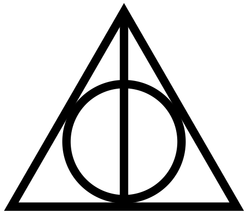

Гаррі Джеймс Поттер
famous wizard • boy who lived • seeker • chosen one • auror
Резюме
— Привіт я англійський напівкровний чарівник і одним з найвідоміших чаклунів сучасності. Найзнаменитіший студент Гоґвортсі за останні сто років. Перший чарівник, якому вдалося протистояти вбивчому прокляттю Авада Кедавра.
досвід
недавній
-
з жовтня 2020 – сьогодні
Завідувач Відділу магічного правопорядку у British Ministry of Magic
-
з 2007го по 2016ий
Кар'єра Аврора
- я став керівником бюро Аврорів у віці 27 років.
- вважаюся експертом і допомагав реформувати та революціонізувати департамент Аврора
- став лідером членів оперативної групи "Статуту таємниці", групи з реагування на надзвичайні ситуації
- щороку читаю лецкцію в Гогвортсі по захисту від темних мистецтв
Роки навчання у Гоґвортсі
-
1го вересня 1996 – 23го травня 1997
-
- на початку літа Дамблдор попросив приєднатися до нього в якійсь невідомій пригоді
- вступив у Слизоклуб Горація Слизорога
- приватні уроки з Альбусом Дамблдором
- став новим капітаном Грифіндоської команди з квідичу
- різдвяна вечірка Слизоклубу
- перший поцілунок з моєю майбутьої дружиною ❤️
- пошук горокраксу в Кришталевій печері
- похорон Альбуса Дамблдора
-
-
1го вересня 1995 – 24го травня 1996
-
- напад на мене дементором в маглівському містечку Літл Уінгін
- прибув на суд за звинуваченням у виконанні магії неповнолітніх у присутності магла
- Долорес Амбридж назначили новою вчителькою Хогвартсу із захисту від темних мистецтв
- таємно навчав групу студентів практичній захисній магії назвавши групу "армія Дамблдора"
- перший справжній поцілунок
- став свідком нападу Нагіні на Артура Візлі уві сні, і почувався майже так, ніби я був змією
- битва при Департаменті таємниць
- магічний світ нарешті визнав, що він повернувся
-
-
1го вересня 1994 – 26го травня 1995
-
- відвідав чемпіонат з Квідичу разом з друзями
- був загадково обраний четвертим учасником у Тричаклунському турнірі
- сходив на бал в честь Тричаклунського турніру
- виконав перше завдання: викравши яйце в Угорського рогохвоста
- виконав друге завдання в Чорному озеріу
- знайшов кубок та смерть Седрика Діґорі
- самі знаєте хто відродився і получив тіло
- було виявлено, що Барті Крауч-молодший підлаштував все, щоб повернути темного Лорда
-
-
1го вересня 1993 – 27го травня 1994
-
- втратив контроль над чарівними силами і роздув тітоньку Мардж
- мій перший поцілунок, жаль що не з дівчиною, а з Дементором.
- отримав в подарунок карту "Мародерів" від братів Візлі
- Геґрід почав викладати догляд за магічними істотами
- познайомився з своїм хрещеним батьком Сіріусом Блеком
- спас хрещеного батька від тюрми в Азкабані.
-
-
1го вересня 1992 – 28го травня 1993
-
- познайомився з своїм другом Эльфом-домовиком Добі
- хтось відкрив таємну кімнату..
- переміг у матчі з Квідиджу проти Силизерину впіймавши Снич
- записався в клуб дуелей
- разом з Роном вирішили слідувати павукам згідно з порадою Геґріда і зутсрітися з його другом Арагогом
- переміг Василіска у таємній кінматі мечем Ґодрика Ґрифіндора.
- Визволив з рабства Добі за допомогою шкарпетки
-
-
1го вересня 1991 – 29го травня 1992
-
- Познайомився з сврїми найкращими друзями Роном Візлі та Герміоною Грейнджер
- сортувальний капелюх оприділив мене на факультет Грифіндор
- разом з друзями перемогли троля
- отримав Nimbus 2000 🧹, подарунок від професорки Макґонеґел
- став наймолодшим гравцем у Квідич за понад сто років і виграв свій перший матч проти Слизерину
- отримав найкращий подарунок у світі Плащ неведимка
- прогулянка Забороненим лісом
- поборов самі знаєте кого
-
Рані роки
-
23го червня 1991
Перший раз порозмовляв із змією
-
31го жовтня 1980
Напад того кого не можна називати на мене
-
31го липня 1980
Народився в Годриковой Долині, Англія, Велика Британія
Заклинання
Характер
подобається😃
не подобається😞
Сови - OWLs
- Астрономія — Задовільно
- Догляд за магічними істотами — Добре
- Чари — Добре
- Ворожіння — Погано
- Гербологія — Добре
- Історія магії — Жахливо
- Зілля — Добре
- Преображення — Добре
Навчання
-
1го Вересня 1991 – 23го Травня 1997Hogwarts School of Witchcraft and Wizardry
-
кінець 1980-x – початок 1990-хвідвідував Початкову школу Святого Грогорія